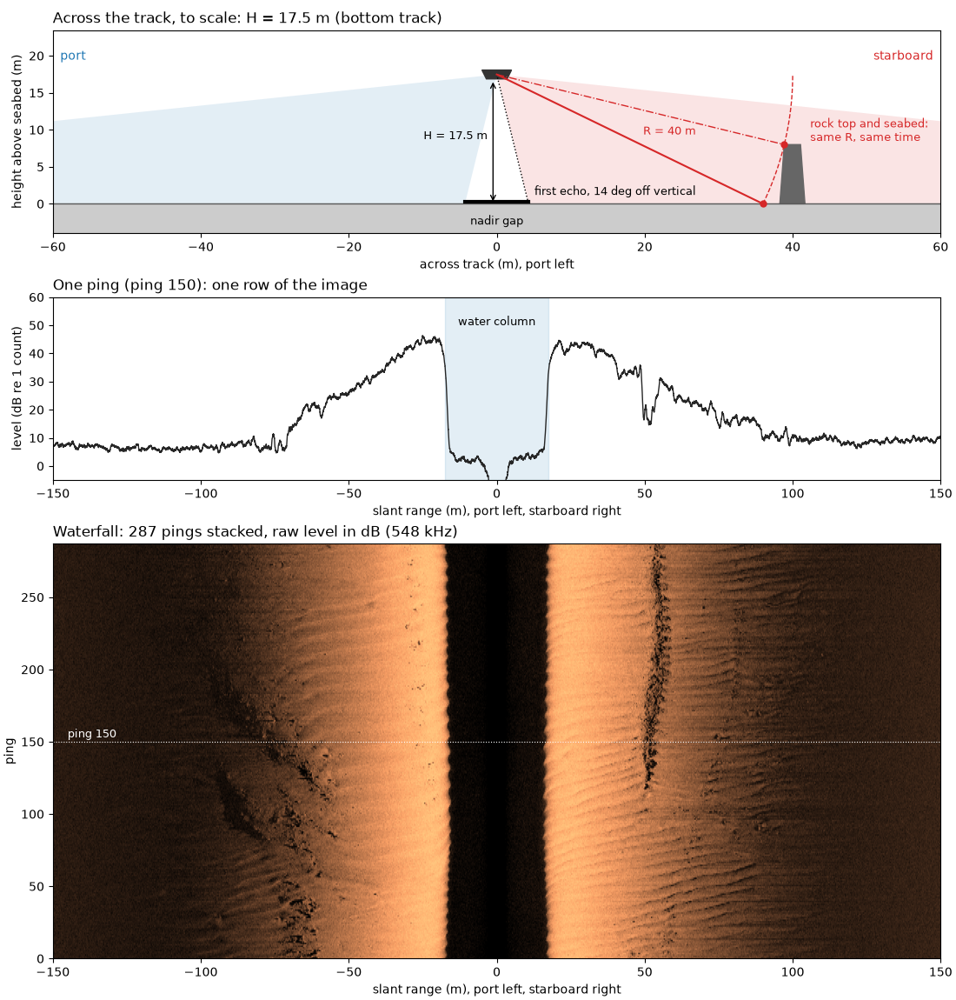
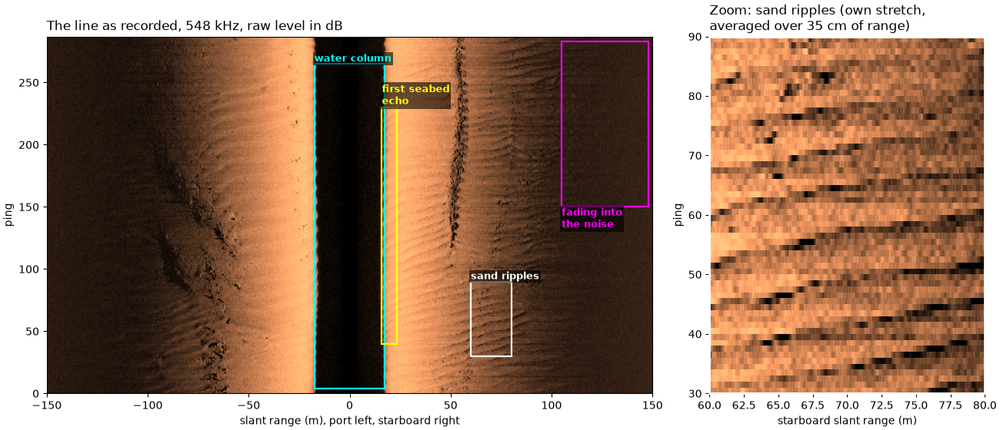
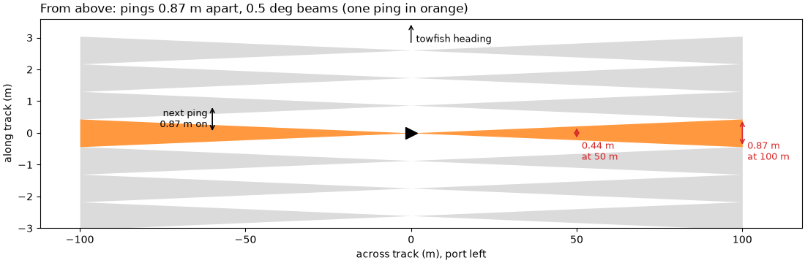
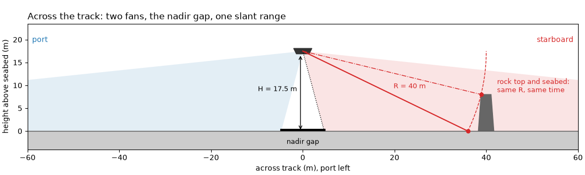
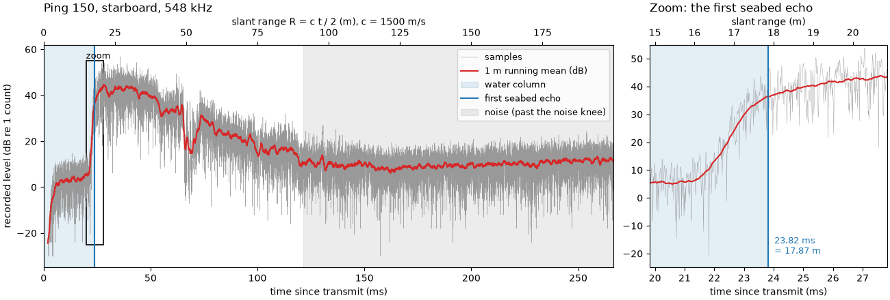
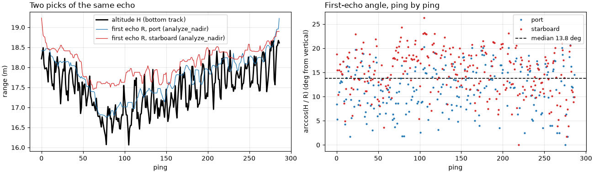

Note
Go to the end to download the full example code.
How sidescan sees#

A sidescan towfish carries two long, thin transducer arrays, one on each side. Each ping it sends a short pulse of sound from both, then listens and records how strong the echo is, sample by sample, against time since the pulse left. Each array’s beam is a thin fan: narrow along the track (typically under a degree to about 1 degree) and wide in the vertical, so one ping lights up a thin strip of seabed running out to each side.
The sonar measures time, and time is range. Sound travels out and back,
so an echo arriving t seconds after the pulse left came from a slant
range
with c the speed of sound in water, about 1500 m/s. With the towfish
at altitude H above a flat seabed, nothing can echo before the sound
has reached the seabed, so each ping starts with a quiet stretch, the
water column, lasting
That stretch is the nadir gap: the seabed straight below the towfish is
not imaged. The first echo comes from the nearest seabed the beam
reaches. If the beam’s inner edge sits at an angle theta from
vertical, that point lies at slant range H / cos(theta), a little
farther than the altitude.
One ping gives one row of samples. Stacking the rows as the towfish moves gives the waterfall image, built line by line like a push-broom scanner. The port side is drawn flipped, range increasing to the left, so the image reads like the seabed seen from above. Brightness is the echo strength (backscatter): rough or hard seabed, and surfaces facing the sonar, return more sound and look bright; the seabed behind an object gets no sound and is in shadow.
Each sample has a range but no angle: every point on a circle of radius
R around the towfish echoes at the same time. So sidescan alone
cannot tell how deep a point is. A multibeam echosounder measures the
angle of each echo as well, and so gives depth.
This page draws the geometry, then measures the water column, the first echo and the fade into noise on one public line.
Data: JNCC Wight-Barfleur Reef, EdgeTech JSF and XTF, Open Government Licence v3.0 (see Example data).
Usage: python examples/theory/plot_how_sidescan_sees.py [output_dir]
# 2026 rshomberg@uri.edu
import sys
from pathlib import Path
import matplotlib.pyplot as plt
import numpy as np
from matplotlib.patches import Polygon, Rectangle, Wedge
from scipy.ndimage import uniform_filter1d
from sidescanpy import analysis, datasets
from sidescanpy.core.units import mask_floor_db
from sidescanpy.export.windows.levels import with_db_var
from sidescanpy.io import read_and_convert
from sidescanpy.log import configure_logging
from sidescanpy.processing import altitude_from_bottom_track, compute_geometric_ranges
from sidescanpy.processing.radiometric import center_frequency_hz
out = Path(sys.argv[1]) if len(sys.argv) > 1 else Path(".")
out.mkdir(parents=True, exist_ok=True)
# The JSF file records no sound velocity; the reader and the range step
# warn about it and use 1500 m/s (see below).
configure_logging("ERROR")
The line#
One line over Wight-Barfleur Reef in the English Channel, recorded at
two frequencies. This page uses the high one, a chirp from 521 to
574 kHz with its center at 548 kHz (sidescanpy names it by the start
of the sweep, hz_521000); titles below use the center frequency.
The file records no altitude, so the bottom_track step measures it
from the first seabed echo of every ping. The first ping was cut short
in the recording and one side holds no samples, so it is dropped.
The figure is the whole line as recorded, port flipped to the left, with the features this page explains boxed: the water column, the first seabed echo, a patch of sand ripples (zoomed on the right) and the far range where the echo fades into the noise.
survey = read_and_convert([datasets.fetch("jncc_wight_barfleur_20130321174522.jsf")], fmt="jsf")
high = survey.frequencies[-1]
ds = survey.get_frequency(high).dataset.load()
ds = ds.isel(ping=np.isfinite(ds["backscatter_intensity"].values).all(axis=(1, 2)))
ds = with_db_var(compute_geometric_ranges(altitude_from_bottom_track(ds)))
fs = float(ds.attrs["sample_rate_hz"])
n_pings, n_samples = ds.sizes["ping"], ds.sizes["sample"]
f_khz = center_frequency_hz(ds) / 1e3
altitude = float(np.nanmedian(ds["altitude_m"].values))
print(f"{high}: chirp {ds.attrs['freq_hz_start'] / 1e3:.0f} to {ds.attrs['freq_hz_end'] / 1e3:.0f} kHz, "
f"center {f_khz:.1f} kHz; {n_pings} pings, {n_samples} samples per side, sampled at {fs:.0f} Hz "
f"({1e6 / fs:.1f} microseconds per sample)")
FACTOR = 8 # average 8 samples (7 cm) for display
n_keep = (n_samples // FACTOR) * FACTOR
coarse = 20 * np.log10(np.abs(ds["backscatter_intensity"].values[:, :, :n_keep])
.reshape(n_pings, 2, -1, FACTOR).mean(axis=-1) + 1e-3)
image = np.concatenate([coarse[:, 0, ::-1], coarse[:, 1]], axis=1)
r_max = n_keep * 1500.0 / (2 * fs) # c = 1500 m/s, see below
lo, hi = np.nanpercentile(image[np.isfinite(image) & (image > 0)], [2, 99.5])
def label_box(ax, x0, x1, y0, y1, text, colour="cyan", where="above", fontsize=9):
"""Outline a feature with a rectangle and name it."""
ax.add_patch(Rectangle((x0, y0), x1 - x0, y1 - y0, fill=False, ec=colour, lw=1.6))
y = y1 if where == "above" else y0
ax.text(x0, y, text, color=colour, fontsize=fontsize, fontweight="bold",
va="bottom" if where == "above" else "top", ha="left",
bbox=dict(boxstyle="square,pad=0.15", fc="black", ec="none", alpha=0.6))
RIPPLES = (60.0, 80.0, 30, 90) # starboard slant range (m) and pings of the zoom
fig, (ax_all, ax_zoom) = plt.subplots(1, 2, figsize=(13, 5.6), width_ratios=[2.2, 1], constrained_layout=True)
ax_all.imshow(image, cmap="copper", vmin=lo, vmax=hi, origin="lower", aspect="auto",
extent=[-r_max, r_max, 0, n_pings], interpolation="antialiased")
r_axis = np.linspace(-r_max, r_max, image.shape[1], endpoint=False) + r_max / image.shape[1]
in_zoom = (r_axis >= RIPPLES[0]) & (r_axis <= RIPPLES[1])
zoom = uniform_filter1d(image[RIPPLES[2]:RIPPLES[3], in_zoom], 5, axis=1) # 35 cm along range
ax_zoom.imshow(zoom, cmap="copper", vmin=np.percentile(zoom, 1), vmax=np.percentile(zoom, 99.5), origin="lower",
aspect="auto", extent=[RIPPLES[0], RIPPLES[1], RIPPLES[2], RIPPLES[3]], interpolation="nearest")
label_box(ax_all, -altitude, altitude, 4, n_pings - 22, "water column", where="above")
label_box(ax_all, altitude - 1.5, altitude + 6, 40, 230, "first seabed\necho", colour="yellow")
label_box(ax_all, RIPPLES[0], RIPPLES[1], RIPPLES[2], RIPPLES[3], "sand ripples", colour="w")
label_box(ax_all, 105, 148, 150, n_pings - 4, "fading into\nthe noise", colour="magenta", where="below")
ax_all.set_xlim(-150, 150)
ax_all.set_xlabel("slant range (m), port left, starboard right")
ax_all.set_ylabel("ping")
ax_all.set_title(f"The line as recorded, {f_khz:.0f} kHz, raw level in dB", loc="left")
for spine in ax_zoom.spines.values():
spine.set_edgecolor("w")
spine.set_linewidth(2)
ax_zoom.set_xlabel("starboard slant range (m)")
ax_zoom.set_ylabel("ping")
ax_zoom.set_title("Zoom: sand ripples (own stretch,\naveraged over 35 cm of range)", loc="left")
fig.savefig(out / "how_sidescan_sees_line.png", dpi=150)

hz_521000: chirp 521 to 574 kHz, center 547.5 kHz; 287 pings, 23140 samples per side, sampled at 86806 Hz (11.5 microseconds per sample)
The speed of sound#
Range needs c. The JSF file stores 0 m/s in every ping, which means
no value was entered, so sidescanpy falls back to 1500 m/s. The XTF
copy of the same pings, written by the same recorder, stores 1500 m/s.
sound_jsf = np.unique(ds["sound_vel_ms"].values)
xtf = read_and_convert([datasets.fetch("jncc_wight_barfleur_20130321174522H.xtf")], fmt="xtf")
sound_xtf = float(np.nanmedian(xtf.get_frequency(xtf.frequencies[0]).dataset["sound_vel_ms"].values))
c = sound_xtf
print(f"sound velocity in the JSF file: {sound_jsf} m/s; in the XTF file: {sound_xtf:.0f} m/s")
print(f"one sample is c / (2 fs) = {c:.0f} / (2 x {fs:.0f}) = {100 * c / (2 * fs):.2f} cm of slant range")
print(f"the last sample is {1000 * n_samples / fs:.1f} ms after transmit: "
f"{c:.0f} x {n_samples / fs:.4f} / 2 = {c * n_samples / fs / 2:.1f} m")
sound velocity in the JSF file: [0.] m/s; in the XTF file: 1500 m/s
one sample is c / (2 fs) = 1500 / (2 x 86806) = 0.86 cm of slant range
the last sample is 266.6 ms after transmit: 1500 x 0.2666 / 2 = 199.9 m
How far the towfish moves between pings#
Rows of the waterfall are pings, one every ping interval. The spacing on the seabed is the towfish speed times that interval. The strip one ping lights up is as wide along track as the beam’s footprint, range times the beam width in radians, so it widens with range.
seconds = (ds["time"].values - ds["time"].values[0]) / np.timedelta64(1, "s")
lat, lon = ds["latitude"].values, ds["longitude"].values
east = (lon - lon[0]) * 111_320.0 * np.cos(np.radians(np.nanmean(lat)))
north = (lat - lat[0]) * 111_320.0
speed = np.hypot(east[-1], north[-1]) / seconds[-1]
ping_interval = float(np.median(np.diff(seconds)))
ping_spacing = speed * ping_interval
BEAM_WIDTH_DEG = 0.5 # an illustrative along-track beam width; the file does not record it
print(f"towfish speed {speed:.2f} m/s, one ping every {ping_interval:.3f} s -> pings {ping_spacing:.2f} m apart")
for r in (20.0, 50.0, 100.0):
print(f" footprint of a {BEAM_WIDTH_DEG} deg beam at {r:.0f} m: "
f"{r:.0f} x {np.radians(BEAM_WIDTH_DEG):.5f} = {r * np.radians(BEAM_WIDTH_DEG):.2f} m")
towfish speed 3.09 m/s, one ping every 0.281 s -> pings 0.87 m apart
footprint of a 0.5 deg beam at 20 m: 20 x 0.00873 = 0.17 m
footprint of a 0.5 deg beam at 50 m: 50 x 0.00873 = 0.44 m
footprint of a 0.5 deg beam at 100 m: 100 x 0.00873 = 0.87 m
The figure shows the seabed from above: seven pings, each lighting a strip that widens with range (along track stretched, so the strips can be seen). Close to the towfish the strip is really about as wide as the array itself (the near field), which this sketch leaves out.
fig, ax_top = plt.subplots(figsize=(11, 3.6), constrained_layout=True)
across = np.linspace(0, 100, 50)
for k in range(-3, 4):
half = across * np.radians(BEAM_WIDTH_DEG) / 2
for sign in (-1, 1):
ax_top.fill_between(sign * across, k * ping_spacing - half, k * ping_spacing + half,
color="C1" if k == 0 else "0.6", alpha=0.8 if k == 0 else 0.35, lw=0)
ax_top.plot(0, 0, marker=">", color="k", ms=12)
ax_top.annotate("", (0, 4 * ping_spacing), (0, 3.2 * ping_spacing), arrowprops=dict(arrowstyle="->", color="k"))
ax_top.text(1.5, 3.4 * ping_spacing, "towfish heading", fontsize=9, va="center")
for r in (50.0, 100.0):
w = r * np.radians(BEAM_WIDTH_DEG)
ax_top.annotate("", (r, -w / 2), (r, w / 2), arrowprops=dict(arrowstyle="<->", color="C3", lw=1.2))
ax_top.text(r + 1.5, -0.25, f"{w:.2f} m\nat {r:.0f} m", color="C3", fontsize=9, va="top")
ax_top.annotate("", (-60, 0), (-60, ping_spacing), arrowprops=dict(arrowstyle="<->", color="k", lw=1.2))
ax_top.text(-61.5, ping_spacing / 2, f"next ping\n{ping_spacing:.2f} m on", fontsize=9, ha="right", va="center")
ax_top.set_xlabel("across track (m), port left")
ax_top.set_ylabel("along track (m)")
ax_top.set_title(f"From above: pings {ping_spacing:.2f} m apart, {BEAM_WIDTH_DEG} deg beams (one ping in orange)",
loc="left")
ax_top.set_xlim(-112, 118)
ax_top.set_ylim(-3, 3.6)
fig.savefig(out / "how_sidescan_sees_strips.png", dpi=150)

The geometry#
A cross-section across the track, drawn to scale at this line’s altitude. The two fans start some angle off vertical, so the seabed straight below is never lit. The dashed circle is every point at one slant range: a rock top on that circle echoes at the same time as the flat seabed where the circle meets it.
INNER_DEG, OUTER_DEG = 15.0, 84.0 # illustrative fan edges, measured from vertical
def draw_cross_section(ax, altitude, inner_deg=INNER_DEG, slant_example=40.0, half_width=50.0, inner_label=None):
"""Towfish, both fans, the seabed, ``H``, one slant range and its equal-time circle."""
fish = np.array([0.0, altitude])
for sign, colour in ((-1, "C0"), (1, "C3")):
# Wedge angles are counter-clockwise from +x; straight down is -90.
a1, a2 = (-90 - OUTER_DEG, -90 - inner_deg) if sign < 0 else (-90 + inner_deg, -90 + OUTER_DEG)
ax.add_patch(Wedge(fish, 3 * half_width, a1, a2, color=colour, alpha=0.12, lw=0))
ax.axhspan(-4, 0, color="0.8")
ax.axhline(0, color="0.35", lw=1)
ax.add_patch(Polygon([[-2.0, altitude + 0.6], [2.0, altitude + 0.6], [1.4, altitude - 0.6],
[-1.4, altitude - 0.6]], color="0.2"))
# Nadir gap and altitude
inner_x = altitude * np.tan(np.radians(inner_deg))
ax.plot([-inner_x, inner_x], [0.3, 0.3], color="k", lw=3)
ax.text(0, -2.8, "nadir gap", ha="center", fontsize=9)
ax.annotate("", (-0.5, 0), (-0.5, altitude - 0.7), arrowprops=dict(arrowstyle="<->", color="k"))
ax.text(-1.2, altitude / 2, f"H = {altitude:.1f} m", fontsize=9, ha="right")
# Inner fan edge: where the first echo comes from
ax.plot([0, inner_x], [altitude, 0], color="k", lw=1, ls=":")
if inner_label:
ax.text(inner_x + 0.8, 1.2, inner_label, fontsize=9)
# One slant range, and every point at that range (same echo time)
ground = np.sqrt(slant_example**2 - altitude**2)
ax.plot([0, ground], [altitude, 0], color="C3", lw=1.5)
ax.text(ground * 0.55, altitude * 0.45 + 1.5, f"R = {slant_example:.0f} m", color="C3", fontsize=9)
angle = np.linspace(-np.arcsin(altitude / slant_example), 0.0, 80)
ax.plot(slant_example * np.cos(angle), altitude + slant_example * np.sin(angle), "--", color="C3", lw=1)
# A steep-sided rock whose sonar-facing top edge sits on the circle:
# its top and the seabed point echo in the same sample.
rock_top = 8.0
rock_x = np.sqrt(slant_example**2 - (altitude - rock_top) ** 2)
ax.add_patch(Polygon([[rock_x - 0.6, 0], [rock_x, rock_top], [rock_x + 2.2, rock_top], [rock_x + 2.8, 0]],
color="0.4"))
ax.plot([0, rock_x], [altitude, rock_top], color="C3", lw=1, ls="-.")
ax.plot([ground, rock_x], [0, rock_top], "o", color="C3", ms=5, zorder=5)
ax.text(rock_x + 3.5, rock_top + 0.5, "rock top and seabed:\nsame R, same time", color="C3", fontsize=9)
ax.text(-half_width + 1, altitude + 2, "port", color="C0", fontsize=10)
ax.text(half_width - 1, altitude + 2, "starboard", color="C3", fontsize=10, ha="right")
ax.set_xlim(-half_width, half_width)
ax.set_ylim(-4, altitude + 6)
ax.set_aspect("equal")
ax.set_xlabel("across track (m), port left")
ax.set_ylabel("height above seabed (m)")
fig, ax_side = plt.subplots(figsize=(11, 3.3), constrained_layout=True)
draw_cross_section(ax_side, altitude, half_width=60.0)
ax_side.set_title("Across the track: two fans, the nadir gap, one slant range", loc="left")
fig.savefig(out / "how_sidescan_sees_geometry.png", dpi=150)

One ping, as recorded#
The samples of one ping, starboard side, in dB (20 log10 of the
recorded value, no gain added). The first samples are exactly zero
and are left off the plot. Then comes the water column, low and noisy
until the seabed echo arrives. The echo is strongest just past it and
fades with range until it sinks into the noise.
PING, SIDE = 150, 1
level = mask_floor_db(ds["backscatter_db"].values[PING, SIDE])
slant = ds["slant_range_m"].values[PING, SIDE]
time_ms = 1000 * ds["sample"].values / fs
nadir = analysis.analyze_nadir(ds)
first_return = nadir.first_bottom_return_sample # (ping, channel)
fb = int(first_return[PING, SIDE])
usable = analysis.estimate_usable_range(ds, exclude_before_sample=first_return, channel=SIDE)
zeros = int(np.argmax(ds["backscatter_intensity"].values[PING, SIDE] > 0))
print(f"ping {PING}, starboard: first {zeros} samples are zero ({1000 * zeros / fs:.2f} ms)")
print(f"first seabed echo at sample {fb}: t = {fb} / {fs:.0f} = {1000 * fb / fs:.2f} ms, "
f"R = {c:.0f} x {fb / fs:.5f} / 2 = {c * fb / fs / 2:.2f} m")
for other in (1480.0, 1520.0):
print(f" with c = {other:.0f} m/s the same echo would be at {other * fb / fs / 2:.2f} m")
print(f"usable range, starboard (estimate_usable_range, noise knee): {usable.usable_range_m:.0f} m")
def running_mean(values, n):
"""Running mean over ``n`` samples, ignoring NaN."""
ok = np.isfinite(values)
total = np.convolve(np.where(ok, values, 0.0), np.ones(n), mode="same")
count = np.convolve(ok.astype(float), np.ones(n), mode="same")
return np.where(count > n / 2, total / np.maximum(count, 1), np.nan)
one_m = int(round(1.0 / (c / (2 * fs))))
smooth = running_mean(level, one_m)
fig, (ax, ax_z) = plt.subplots(1, 2, figsize=(13, 4.4), width_ratios=[2.4, 1], constrained_layout=True)
for a in (ax, ax_z):
a.plot(time_ms, level, lw=0.3, color="0.6", label="samples")
a.plot(time_ms, smooth, lw=1.5, color="C3", label="1 m running mean (dB)")
a.axvspan(0, 1000 * fb / fs, color="C0", alpha=0.12, label="water column")
a.axvline(1000 * fb / fs, color="C0", lw=1.5, label="first seabed echo")
a.set_xlabel("time since transmit (ms)")
ax.axvspan(2000 * usable.usable_range_m / c, time_ms[-1], color="0.5", alpha=0.15, label="noise (past the noise knee)")
ax.set_ylabel("recorded level (dB re 1 count)")
ax.set_xlim(0, time_ms[-1])
ax.legend(loc="upper right", fontsize=9)
top = ax.secondary_xaxis("top", functions=(lambda t: c * t / 2000, lambda r: 2000 * r / c))
top.set_xlabel(f"slant range R = c t / 2 (m), c = {c:.0f} m/s")
ax.set_title(f"Ping {PING}, starboard, {f_khz:.0f} kHz", loc="left")
# Zoom on the first seabed echo, outlined in the full view.
z0, z1 = 1000 * fb / fs - 4.0, 1000 * fb / fs + 4.0
ax.add_patch(Rectangle((z0, -25), z1 - z0, 80, fill=False, ec="k", lw=1.2))
ax.set_ylim(-35, 62)
ax.text(z0, 56, "zoom", fontsize=9)
ax_z.set_xlim(z0, z1)
ax_z.set_ylim(-25, 55)
ax_z.text(1000 * fb / fs + 0.2, -20, f"{1000 * fb / fs:.2f} ms\n= {c * fb / fs / 2:.2f} m", color="C0", fontsize=9)
top_z = ax_z.secondary_xaxis("top", functions=(lambda t: c * t / 2000, lambda r: 2000 * r / c))
top_z.set_xlabel("slant range (m)")
ax_z.set_title("Zoom: the first seabed echo", loc="left")
fig.savefig(out / "how_sidescan_sees_ping.png", dpi=150)

ping 150, starboard: first 168 samples are zero (1.94 ms)
first seabed echo at sample 2068: t = 2068 / 86806 = 23.82 ms, R = 1500 x 0.02382 / 2 = 17.87 m
with c = 1480 m/s the same echo would be at 17.63 m
with c = 1520 m/s the same echo would be at 18.11 m
usable range, starboard (estimate_usable_range, noise knee): 91 m
How far off vertical the first echo comes from#
estimate_beam_geometry() turns the first
echo’s slant range into an angle from vertical, arccos(H / R), for
every ping and side.
beam = analysis.estimate_beam_geometry(ds, first_return, usable.usable_range_m)
theta = beam.near_angle_deg_median
print(f"altitude (bottom track, median): {altitude:.2f} m")
print(f"first-echo angle from vertical: median {theta:.1f} deg, spread (std) {beam.near_angle_deg_std:.1f} deg "
f"({beam.confidence})")
print(f"at that angle the first echo is H / cos(theta) = {altitude:.2f} / {np.cos(np.radians(theta)):.3f} = "
f"{altitude / np.cos(np.radians(theta)):.2f} m away, {altitude / np.cos(np.radians(theta)) - altitude:.2f} m "
f"farther than H ({(altitude / np.cos(np.radians(theta)) - altitude) / (c / (2 * fs)):.0f} samples)")
altitude (bottom track, median): 17.47 m
first-echo angle from vertical: median 13.8 deg, spread (std) 4.9 deg (determined)
at that angle the first echo is H / cos(theta) = 17.47 / 0.971 = 17.99 m away, 0.52 m farther than H (60 samples)
The figure follows every ping. Left: the altitude from the bottom
track and the slant range of the first echo on each side, nearly on
top of each other. Right: the angle arccos(H / R) that the two
give, the quantity whose median and spread are printed above.
alt_ping = ds["altitude_m"].values
first_range = np.full(first_return.shape, np.nan)
ok = np.isfinite(first_return)
pp, cc = np.nonzero(ok)
first_range[ok] = ds["slant_range_m"].values[pp, cc, first_return[ok].astype(int)]
angle = np.degrees(np.arccos(np.clip(alt_ping[:, None] / first_range, -1, 1)))
angle[~(first_range >= alt_ping[:, None])] = np.nan
fig, (ax_r, ax_t) = plt.subplots(1, 2, figsize=(13, 3.8), constrained_layout=True)
ax_r.plot(alt_ping, color="k", lw=2, label="altitude H (bottom track)")
for side, (name, colour) in enumerate((("port", "C0"), ("starboard", "C3"))):
ax_r.plot(first_range[:, side], color=colour, lw=0.9, label=f"first echo R, {name} (analyze_nadir)")
ax_t.plot(angle[:, side], ".", color=colour, ms=4, label=name)
ax_r.set_xlabel("ping")
ax_r.set_ylabel("range (m)")
ax_r.set_title("Two picks of the same echo", loc="left")
ax_r.legend(fontsize=9)
ax_t.axhline(theta, color="k", lw=1.2, ls="--", label=f"median {theta:.1f} deg")
ax_t.set_xlabel("ping")
ax_t.set_ylabel("arccos(H / R) (deg from vertical)")
ax_t.set_title("First-echo angle, ping by ping", loc="left")
ax_t.legend(fontsize=9)
for a in (ax_r, ax_t):
a.grid(alpha=0.3)
fig.savefig(out / "how_sidescan_sees_angle.png", dpi=150)

Geometry, one ping and the waterfall together#
Top: the cross-section at this line’s altitude, with the inner fan edge at the measured first-echo angle. Middle: ping 150, both sides, port flipped to the left, averaged over 1 m. Bottom: all pings stacked the same way, the waterfall. The dark band in the middle is the water column, as wide on each side as the altitude; the image fades at long range.
signed_slant = np.concatenate([-slant[::-1], slant])
ping_levels = mask_floor_db(ds["backscatter_db"].values[PING])
ping_smooth = np.concatenate([running_mean(ping_levels[0], one_m)[::-1], running_mean(ping_levels[1], one_m)])
fig = plt.figure(figsize=(11, 11.5), constrained_layout=True)
ax_geo, ax_ping, ax_wf = fig.subplots(3, 1, height_ratios=[1.05, 0.75, 1.7])
draw_cross_section(ax_geo, altitude, inner_deg=theta, slant_example=40.0, half_width=60.0,
inner_label=f"first echo, {theta:.0f} deg off vertical")
ax_geo.set_title(f"Across the track, to scale: H = {altitude:.1f} m (bottom track)", loc="left")
ax_ping.plot(signed_slant, ping_smooth, color="0.15", lw=1)
ax_ping.axvspan(-altitude, altitude, color="C0", alpha=0.12)
ax_ping.text(0, 50, "water column", ha="center", fontsize=9)
ax_ping.set_ylabel("level (dB re 1 count)")
ax_ping.set_title(f"One ping (ping {PING}): one row of the image", loc="left")
ax_ping.set_ylim(-5, 60)
ax_wf.imshow(image, cmap="copper", vmin=lo, vmax=hi, origin="lower", aspect="auto",
extent=[-r_max, r_max, 0, n_pings], interpolation="antialiased")
ax_wf.axhline(PING, color="w", lw=0.8, ls=":")
ax_wf.text(-145, PING + 3, f"ping {PING}", color="w", fontsize=9)
ax_wf.set_ylabel("ping")
ax_wf.set_title(f"Waterfall: {n_pings} pings stacked, raw level in dB ({f_khz:.0f} kHz)", loc="left")
for ax in (ax_ping, ax_wf):
ax.set_xlim(-150, 150)
ax.set_xlabel("slant range (m), port left, starboard right")
fig.savefig(out / "how_sidescan_sees.png", dpi=150)
Reading the result#
Time is range. The starboard seabed echo of ping 150 arrives
23.82 ms after the pulse left, so it came from
R = 1500 x 0.02382 / 2 = 17.87 m. The whole ping is 266.6 ms long,
199.9 m of slant range. Every range depends on c: this JSF file
stores no sound velocity (0 m/s), and the 1500 m/s that sidescanpy
falls back to is also what the recorder wrote into the XTF copy. A
speed 20 m/s off moves that echo by about 0.24 m (17.63 m at 1480 m/s,
18.11 m at 1520 m/s), a 1.3 % change at every range.
The water column is the altitude. Nothing comes back for the
first 23.8 ms, apart from low noise; in ping 150 the first 168
samples are exactly zero. With no altimeter on this line, the bottom_track
step takes the altitude from that first echo: 17.47 m (median of all
pings). That is why the dark band in the waterfall is as wide on each
side as the altitude, and why its edges wander as the towfish rises
and falls.
The first echo is a little off vertical. Measured against that
altitude, estimate_beam_geometry() puts the
first echo 13.8 degrees from vertical (median, spread 4.9 degrees).
The number is less firm than it looks. Near vertical, H / cos(theta)
barely changes: at 13.8 degrees the first echo is only 0.52 m (60
samples) farther than the altitude. And here the altitude itself comes
from the first echo, so the angle mostly measures the difference
between two ways of picking the same echo (the bottom track’s and
analyze_nadir()’s), not the beam’s true
inner edge. Separating the two needs an altimeter.
The image fades with range. The level falls by tens of dB from
the first echo outward. estimate_usable_range()
puts the starboard signal into the noise at 91 m: its noise knee, where
the median level comes within 3 dB of its lowest value and stops
falling. How far a sidescan sees compares that with a more cautious
rule. The ping is also recorded as plain counts, not a calibrated
sound level: Echo amplitude and decibels explains what the dB values
mean.
One ping is one row. The towfish moved at 3.09 m/s and pinged every 0.281 s, so the rows are 0.87 m apart on the seabed. A beam 0.5 degrees wide (the file does not record the real width) covers 0.44 m along track at 50 m and 0.87 m at 100 m: with such a beam, consecutive strips only meet at about 100 m, and nearer in each ping samples a narrower strip than the spacing between rows.
No depth. Each sample is one range on a circle around the towfish. A rock top and the seabed beyond it on that circle land in the same sample, so the image cannot say how high anything is, only where its shadow falls (A wreck’s height from its shadow).
In sidescanpy: altitude_from_bottom_track()
fills a missing altitude from the first echo,
compute_geometric_ranges() turns sample
number into slant range with R = c t / 2 and then into ground
range, and apply_tvg() evens out the
fade with range.
Total running time of the script: (0 minutes 8.493 seconds)